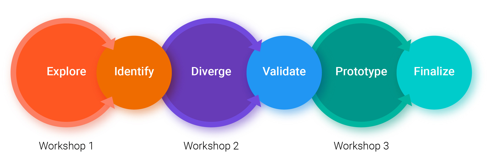
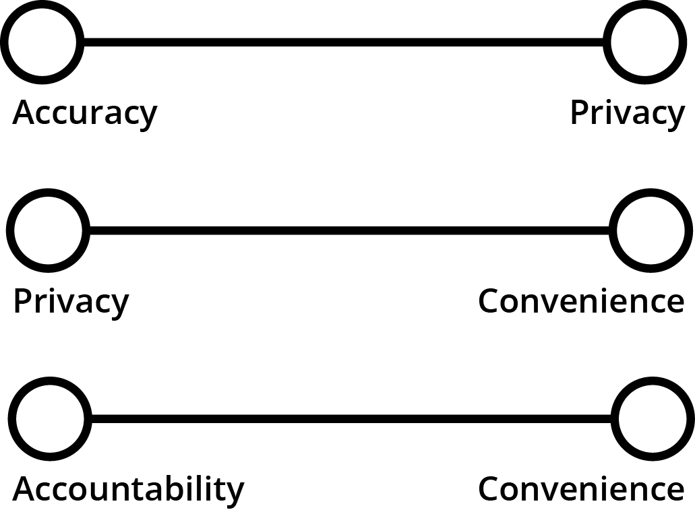

Sustainability and increased fuel efficiency have caused the conventional way to fund road improvement(a tax on gasoline) to become ineffective at funding infrastructure improvement. A Road Usage Charge, by multiple states, that suggests a road usage charge on cars in proportion to how much it uses public roads. I lead a Participatory Design effort to design a mobile app solution for a road usage charge. Using insights and preliminary designs made in participatory design workshops, my team and I designed Tongle, a smart government technology that allows drivers to track their road usage on a per mile basis in order to contribute to a Road Usage Charge.
Role
Design Researcher, Product Manager
Team
2 UX Designers, Project Manager
Awards
Currently, most states use a tax on gas revenues to pay for road infrastructure projects. Rapid growth of fuel efficent and electric vehicles has made gasoline taxes increasingly inefficent. To solve the funding gap, a road usage charge has been suggested in states such as New York, California, Oregon and Washington. In a road usage charge, drivers pay a "mileage tax" in proportion to how much they use public roads.
In the winter of 2017, a representitive from The Washington State Transportation Comission approached my team and I with the opprotunity to design a mobile phone solution for a road usage charge. The representive wanted above all a human-centered approach to innovation and gave us full funding to deliver such a solution.

Fuel efficent cars such as a Hybird pay siginifcantly less than less fuel efficent vehicles. While the problem has not reached a critical threshold yet, it is one that we will face inevitably in the future.
As a human-centered designer, my team and I were concerned with the impact that a road usage tracking technology would have on end-users. Accurately monitoring road usage and accounting for things like out of state travel, private roads, and non-taxable trips might hurt the autonomy of end-users. A mobile phone road usage system affects privacy(to collect accurate data), inconveniences users, and raises fairness issues. Even before starting, my team and I new that navigating the complex interaction between values was key to the sucess of this project.
Participatory Design(PD) is a fundamentally democratic process. PD aims to increase the agency of the eventual end-users. Shifting the focal point of design to center around those being designed for, results in a product which better serves those using it.
We chooose to accept a definition of participatory design which says: a participatory result is one that increases the agency of the end-users of the product[Tonne Brattetieg].
I choose to theme our participatory design process around the tag line "design your own tax". I imagined a process that allowed participants to set up a road usage charge that fit their needs. With my tean, we planned to use an agile methodolgy which deployed alternating sprints of research and design. The cycle would begin with a week in which we focus on research followed by a week where we applied the research. As the project progressed I ended up drawing heavily from the Value Sensitive Design as a way to navigate the complex human values that exist in this design problem.
To inform the development of our product, my team and I planned 3 participatory design workshops. During theese workshops we invited the same group of 9 people to share their values, insights and design ideas.
Together, in each workshop my team led the invited members through a series of acitivites. These acitivites included a wide range of design acitivites ranging from infinity diagraming to mini-design sprints. During, workshops resembled a mix of ethnographic user research and co-design acitivities. For example, in conversation with participants, informals interview skills were used to elicit unbiased data. On the other hand, co-design acitivites allowed users to communicate ideas through design artifacts without our intentionality biasing their products.

Using the workshops as a combination of user research and design ideation we conducted analysis on artifacts(such as infinity diagram post-it notes) and recorded notes to conduct analysis. We found a list of key values that participants brought up during workshops.
To keep a pariticpatory process, to decide what insights to focus on, my team and I shared our findings with participants while at the same time allowing them to rank which ones they thought were the most important to the road usage charge. By allowing pariticpants to rank values we further allowed end-users themeselves to approve which values should be embded in our product.

An interesting thing happened when we showed participants the values they ranked as important to a road usage charge. People slected the values using them in groups of two or more to create "value tensions". Tensions empowered participants to evaluate the strengths and weakness of an idea based off values that mattered to them.
Participatory design in product development allows researchers and designers to have an intimate understanding of what end users of their product want from the product. For me a major moment in the process was when a of participatory design workshop participant said the following quote to another participant.
Our third and final Participtory Design Workshop found us presenting three different designs(in medium fidelity) for evaluation by our paritcipants. We used the feedback and user tests that happened in the third workshop to evaluate the effectiveness of the prototypes.
After collecting feedback, we said good bye to a group people we had grown definite bonds with over the past 6 weeks. We were all, a bit suprisingly, sad to say goodbye to a group of 9 strangers we had met just 6 weeks ago but excited for what came next.
Our participatory design group gave the most promising feedback to Prototype 3: Toggle Dongle + Dual Solution. In this prototype, participants used an external device to track miles locally accessing those miles through a phone. We found that participants like that not having to have their phone with them all the time gave them flexbility to have both an accurate an convenient system. We took the inspiration from the idea of having the ability to toggle on/off between two values and named our product Tongle.
We began our design sprint by making a system state diagram and a sitemap for the mobile application. The system state diagram allowed us to understand the requirements needed for both a mobile phone and external device.

After establishing the basic architecture of the system, we began filling in the details of what our application would look like. Using the knowledge we gained from prototypes and tests during the Participatory Design workshops, we developed a wireframe before moving on to a higher fidelity interactable prototypes.
Click on the above link to interact with our final prototype created in collaboration.